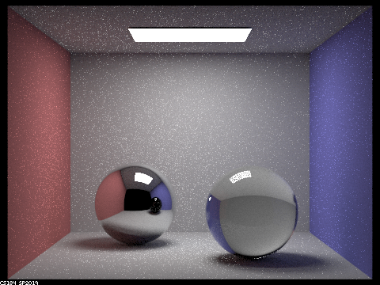

Based on project 3-1, we added more functions to the path tracer like complicated materials, environmental lights as well as a camera focusing feature based on thin lens approximation.
Part 1: Ray Generation and Intersection
For part 1, we need to implement a ray reflect and ray refract to realistically mimic mirror and glass materials. Unlike deffuse materials, where we can cast rays in a direction and generate a BSDF based on the direction of the light reflection. For this part, we need to cast a ray form the inside of the sphere, and increase the maximum ray depth to increase the number of times rays being reflected and refracted.
Max ray depth
|
shows direct lighting effects only (the ceiling light) |
shows the diffuse areas other than the the plane of the light source (floor, walls) |
|
shows the ceiling and specular areas (reflective of the glass sephere and most of the mirror sephere) |

shows the ceiling reflection in the mirror sephere as well as the refraction through the glass sphere |
|
the mirror sephere, as well as the ceiling light through the glass sephere. |
glass sephere onto the bottom of the sephere, as well as the refraction onto the wall. |
|
brings out the noise. |
Part 2: Microfacet Materials
For Part 2, our goal is to implement microfacet materials, those that do not have smooth normals in a micro scale. Hence we need to implement a NDF (defines how the microfacets' normals are distributed). Accroding to the Beckmann distribution, alphaα represents how the micro surfaces reflect lights. The higher the alpha, the rougher the surfaces are resulting in reflections in multiple direction.
Alpha Values

128 samples per pixel and 1 samples per light The dragon is reflective as made of mirror thus noise We can clearly see the reflective on the body of the dragon (the lower the alpha is the smoother the suraces are) |
128 samples per pixel and 1 samples per light Still really reflective but increase of noise
Even with higher alpha, we can still see the reflections (the lower the alpha is the smoother the suraces are) |
|
128 samples per pixel and 1 samples per light Here the dragon is really smooth, as if it is matte
Brighter color and reduce of noise |
128 samples per pixel and 1 samples per light Here the surface is really rough Brighter color and reduce of noise |
Hemisphere sampling and importance sampling.
|
Cosine hemisphere sampling m = 4, s = 64, l = 1 We can clearly see how much noise is made during the render Since sampling a random direction resulting in spreaded out noise. |
Importance sampling m = 4, s = 64, l = 1 There is so much less noise. Since importance sampling distributes samples based on lights' influences in different areas |
|
Importance sampling with IRON m = 4, s = 64, l = 1 The Fe material have etas: 2.8851 2.9500 2.6500 k: 3.0449 2.9300 2.8075 On wavelengths of 614nm, 549 nm, and 466nm |
Part 3: Environment Light
For part3, we need to implement Environment Light method to emulate world lighting. If we use uniform sampling every area would have the same weight hence resulting in more noise. But if we usethe importance sampling we can increase the density of samples in important areas. We need to first address the environment map and assign pixel with differnt probability. Hence reduce the bias of calculation wasted on "unimportant" areas. This way we can improve quality.

|
|
|
|
We can see there is a little noise on the brighter side of the bunny |
We can see there is little noise but when looked from far away there is not that much difference |
|
|
|
What is noticible is that there should be effiency drop for the two sampling methods, but that did not happen for me. Maybe it is because the environment map I am using, where the lights are rather "uniform".
Part 4: Depth of Field
For part4, we want to mimic the behavior of a camera lens, allowing us to play with lens radius and depth of field. We can put a focal point and sample the lens. These samples have directions toward the focus. (DO NOT FORGET TO NORMALIZE!!!!!!) The thin lens model, light travels from a point through the lens then converted at a point behind the lens. It has a key feature being: focal length, the distance between the lens to its focus. On the other hand, the pinhole camera is the thin lens to a extreme degree where the aperture shrinks to zero.
Depths
|
CBdragon_microfacet_au.dae aperture = 0.3 focal length = 4 128 samples per pixel and 4 samples per light |
CBdragon_microfacet_au.dae aperture = 0.3 focal length = 4.5 128 samples per pixel and 4 samples per light |

CBdragon_microfacet_au.dae aperture = 0.3 focal length = 5 128 samples per pixel and 4 samples per light |
CBdragon_microfacet_au.dae aperture = 0.3 focal length = 5.5 128 samples per pixel and 4 samples per light |
It is clear that with different focal length there is quite a difference. In the first image the focus is lied in front of the dragon, hence the whole picture is blurred. In the second and the third images, the focus is lied respectively on the head of the dragon and the tail of the dragon. While in the last image the focus is pushed to the back wall.
Apertures
|
CBdragon_microfacet_au.dae aperture = 0.05 focal length = 5 128 samples per pixel and 4 samples per light |
CBdragon_microfacet_au.dae aperture = 0.1 focal length = 5 128 samples per pixel and 4 samples per light |
|
CBdragon_microfacet_au.dae aperture = 0.3 focal length = 5 128 samples per pixel and 4 samples per light |
CBdragon_microfacet_au.dae aperture = 0.6 focal length = 5 128 samples per pixel and 4 samples per light |
It is clear that there is quite a difference with different aperture, all of the 4 images are focusing on the tail of the dragon. We can see that with smaller aperture we can capture more detailed imformation around the focus point. As the apture increases, the blurred area increases as we can see through the images.